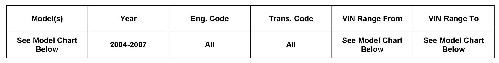
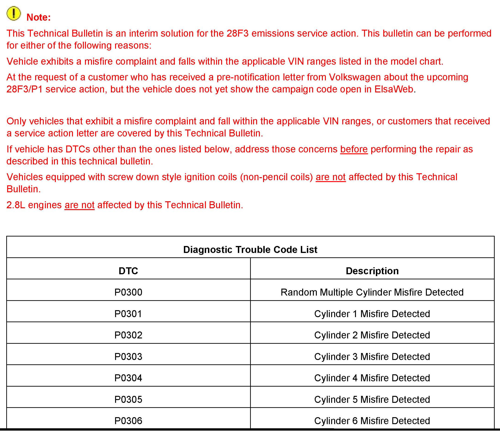
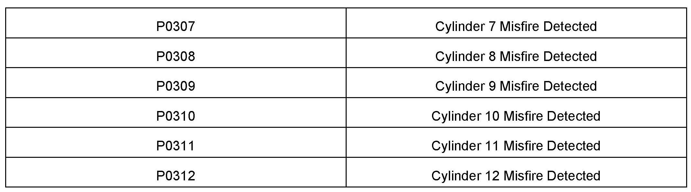
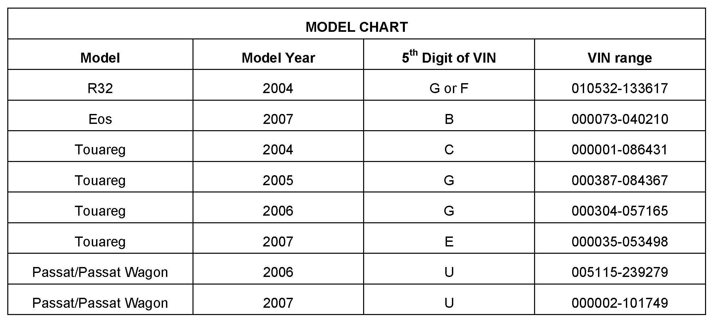
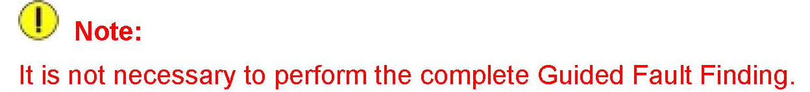
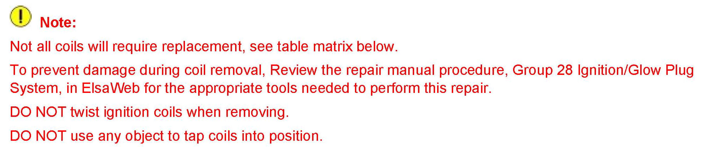
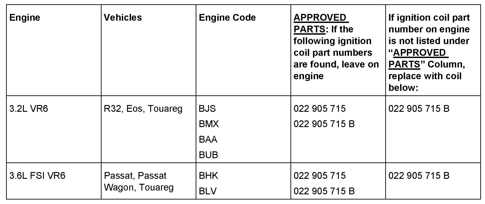
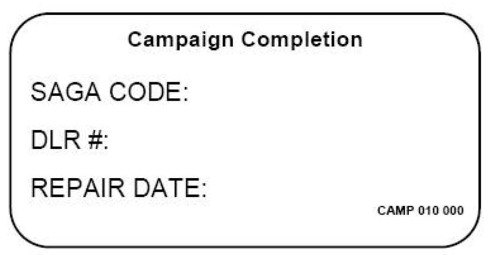
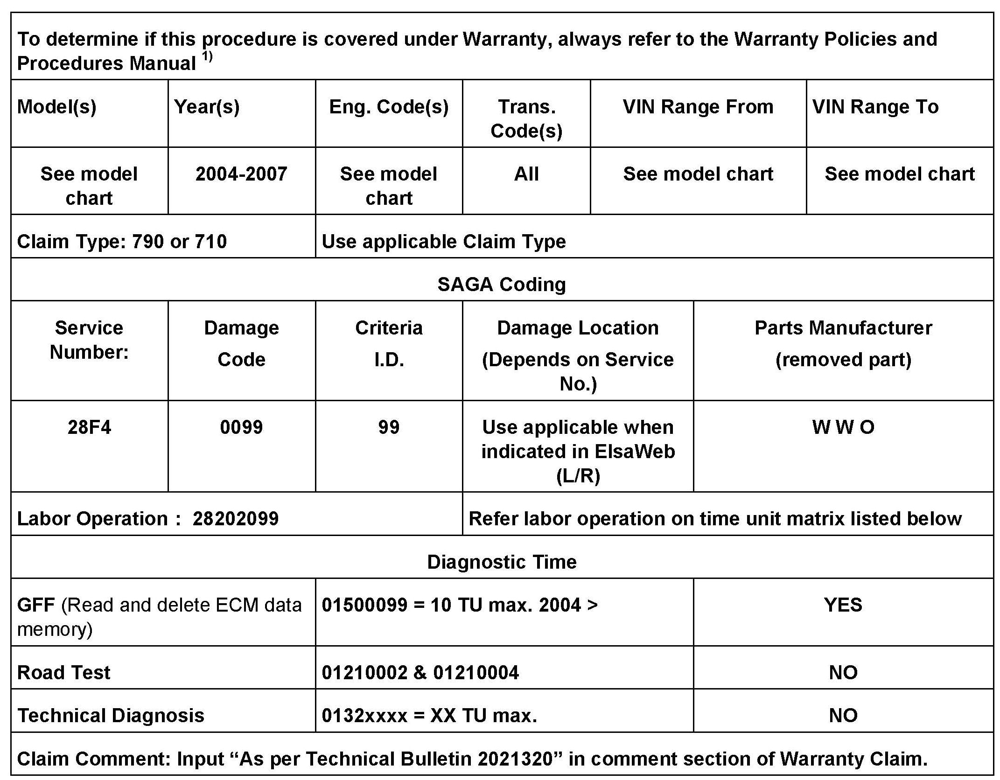
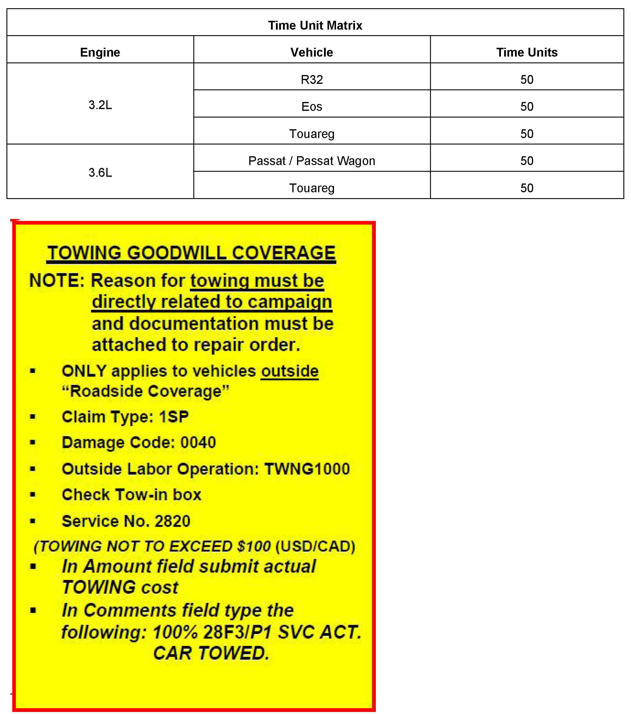

Emissions - Interim Repair For Recall 28F3
28 10 02May 10, 2010
2021320 Supersedes T.B. Group 28 number 09-03 dated December 22, 2009 to remove vehicle applicability covered by 28F3 campaign.

Vehicle Information
MIL ON or Flashing, Misfire DTCs P0300-0312 Stored in ECM


Note
Technical Background
The misfire condition may be caused by a malfunctioning ignition coil.

The following vehicles and VIN ranges are affected by this condition:
Production Solution
Vehicles are out of production.
Service
Procedure

Note
^ Check for Campaign Completion Label.
^ Verify whether a Campaign Completion Label with SAGA code 28F3 is affixed next to the vehicle emission control label under the hood. If label is present, DO NOT proceed with this technical bulletin.
^ Address misfire DTCs stored in the ECM fault memory.
^ Replace all ignition coils that have Misfire DTCs associated to them.
^ Inspect and if necessary replace all other ignition coils (even from cylinders without misfire) as listed in the table below.


Note
^ Complete the Campaign Completion Label and mark 28F3 in the SAGA CODE field.
^ Ensure Campaign Completion label does not cover any existing label(s) and the area where it is affixed is clean and free from dirt or debris.
^ PLACE CAMPAIGN COMPLETION LABEL NEXT TO VEHICLE EMISSION LABEL UNDER THE HOOD IN THE ENGINE COMPARTMENT.

^ In the United States and Canada, vehicles repaired under the 28F3 Campaign (or this interim Technical Bulletin) are required to be identified with a Campaign Completion Label (see below).
^ Order labels at no cost from Archway Marketing Services (formerly Resolve Corporation) at 1-800-544-8021. The part number for the Campaign Completion label is CAMP 010 000.
^ If Misfire complaint is not corrected after the replacements of the ignition coils diagnose the condition and perform necessary repairs with the use of Guided Fault Finding, the repair manual and applicable Technical Bulletins.
Tip:
Additional repairs should not be claimed under this Technical Bulletin.
Warranty
It is still possible to claim this TSB for vehicles outside of the limited new vehicle warranty.
Submit only one claim per case.


The removed parts remain at the dealer and must be destroyed, not re-used.
Required Parts and Tools
Parts are vehicle specific.
Review repair manual procedure in ElsaWeb for special tools.
Additional Information
All part and service references provided in this Technical Bulletin are subject to change and/or removal.
Always check with your Parts Dept. and Repair Manuals for the latest information.